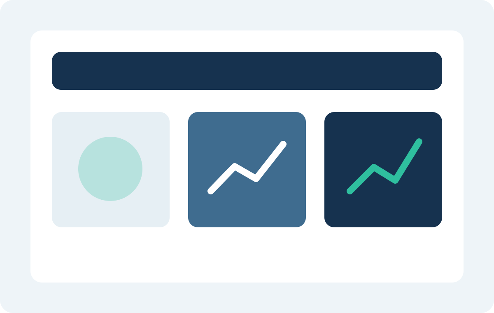

営業主導の手配業務を標準化し、月末集中を平準化
営業、物流、仕入の三部門で別管理されていた受注情報を一本化。判断基準が担当者ごとに異なっていたため、処理手順と例外ルールを再設計しました。
- 導入前
- Excelとメール中心で進行し、月末に残業が集中
- 対応内容
- 受注から手配完了までの標準フローと承認ルールを定義
- 成果
- 処理工数35%削減、納期遅延率41%改善
Cases
導入結果は工数削減だけでなく、判断の速さ、問い合わせ品質、入力定着率など、継続運用の観点でも確認しています。

Case Studies
営業、物流、仕入の三部門で別管理されていた受注情報を一本化。判断基準が担当者ごとに異なっていたため、処理手順と例外ルールを再設計しました。
繁忙期に回答品質がばらついていたため、FAQ、判断フロー、回答テンプレート、エスカレーションルールを整備。社内チームと外部委託の連携基準も再定義しました。
入力項目や権限設計が現場に合っておらず紙申請が併存。入力ルールと承認権限を見直し、会議体まで含めて定着運用を設計しました。
Industry Coverage
「提案がきれいなだけでなく、引継ぎ時に止まりやすい例外処理まで整理してくれたので、現場の納得感が高かったです。」
管理本部長 / 物流関連企業Next Step
業種、部門構成、導入済みツールの状況に合わせて、近い事例と進め方の目安をご案内します。